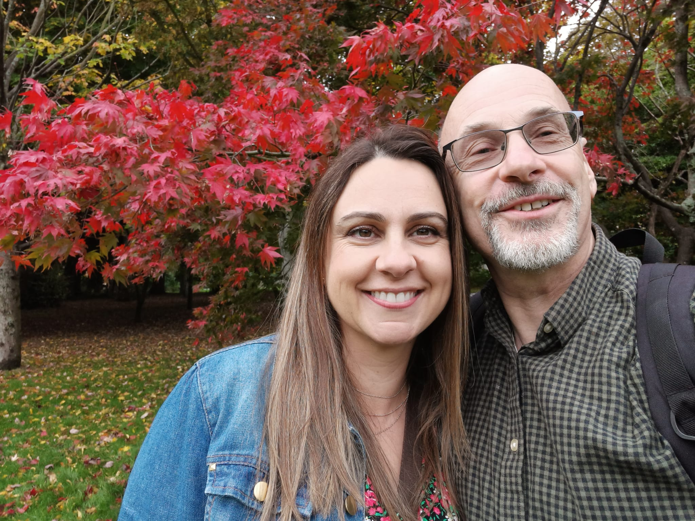
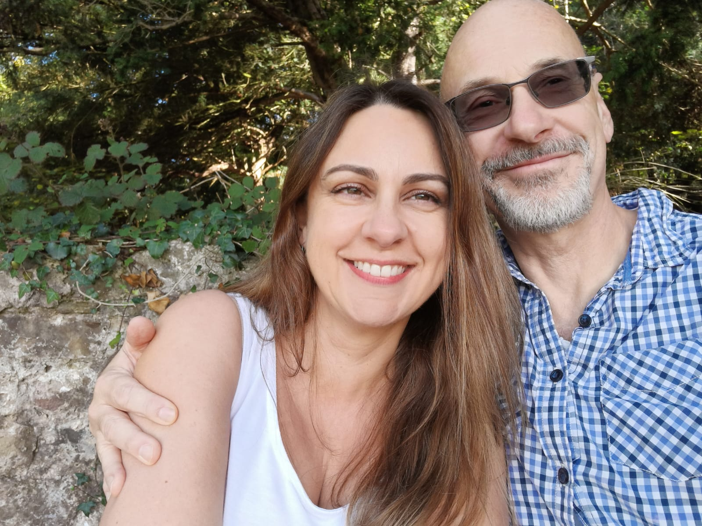
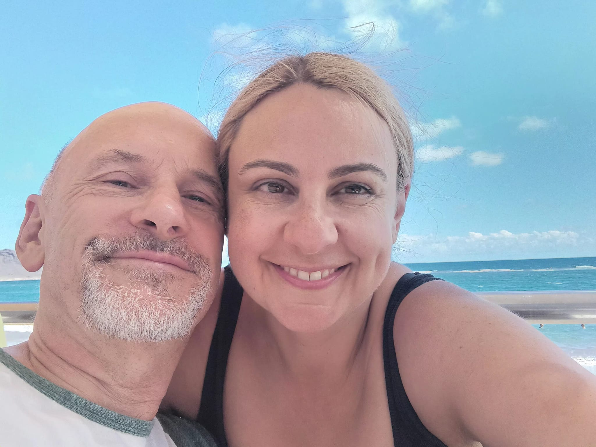

OUR STORY
  THE DAY
Ceremony
The ceremony will start at 2pm, please arrive by 1.45pm at the latest.
Reception
Following the ceremony we will go to a lovely restaurant for a Reception meal.
TRAVEL
The church has no car park, although there is plenty of parking on the surrounding roads.
Ceremony address:
All Saints ChurchVictoria Square
Penarth, CF64 3EL
The reception is a 15 minute walk from the church, but note this involves a steep descent down to the sea front. There are a limited number of parking spaces right outside of the restaurant including disabled spaces. However, there is a two hour limit. There is also on-street parking on Marine Parade and a long flight of steps down to the front near the restaurant.
Reception address:
Sids Restaurant & Bar With RoomsThe Esplanade
Penarth, CF64 3AU
Q & A
When do I need to RSVP by?
Please let us know by April 4th.
Is there a dress code?
No. Wear whatever you’re comfortable with.
Is there a gift list?
Your presence at our wedding is all we could wish for, and we truly do not expect any gifts. However, for those who feel they would like to give something, a John Lewis voucher would be very much appreciated.
When and what will we be eating?
We hope to be sitting down to eat between 3.30pm and 4pm.
Can I take photos?
Yes, of course you can take photos, and we hope you will send us your best ones. However, out of respect, please don’t take photos in the church during the service.
What about access for people of limited mobility?
The roads and paths around the church are level and flat. There are no steps. However, at the restaurant, we suggest that you are dropped off on the road outside. There is ramp access into the restaurant.
SHARE YOUR PHOTOS
After the day we would love it if you would share your favourite photos with us.
RSVP
Please let us know if you can make the wedding by April 4th 2026